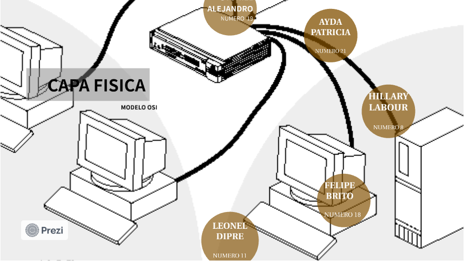

La Capa Física

La capa física es la primera capa del modelo OSI y se encarga de la transmisión física de datos a través de un medio de comunicación, como un cable o una señal inalámbrica. Esta capa se preocupa principalmente por la forma en que se transmiten los bits de datos, incluyendo aspectos como la velocidad de transmisión, la sincronización, la codificación y la detección de errores. También se encarga de la especificación de los conectores y los tipos de cables utilizados en la transmisión de datos. En resumen, la capa física se ocupa de la transferencia de bits de un dispositivo a otro a través del medio de comunicación físico.